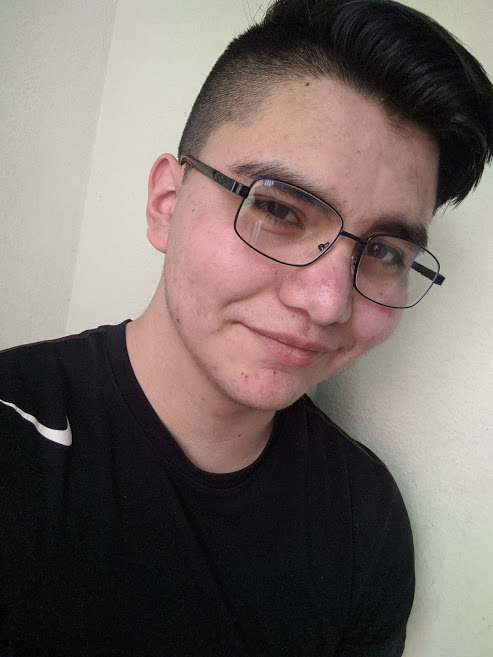

Soy
una persona bastante centrada y objetiva en todo lo que realizo. No tengo muchas amistades debido a que soy en primer instancia y me cuesta socializar.
Me gusta ser autodidacto, ayudar a los demás, enseñar, hablar, manejar muchos temas a la vez, aprender cosas y vivir experiencias. Debido a ésto tengo muchos hobbys y se mucho de muchos temas.
Entre mis hobbys está: jugar videojuegos, dibujar y pintar, reparar consolas u objetos tecnológicos, tocar instrumentos como la guitarra, el ukelele o el piano, leer comics o reseñas, ver películas, series o documentales, entre otras.
¿Cuál es mi historia?
Nací el día 26 de mayo del 2004, en el estado y ciudad de Aguascalientes. Mi nombre es Andrik Alexander Ahumada Martínez y actualmente tengo 16 años de edad.
Viví durante 9 años y medio de mi vida aproximadamente, en el fraccionamiento de Ojocaliente IV; pero debido a un problema con el gobierno tuvimos que mudarnos a mi actual hogar en Haciendas de Aguascalientes.
Estudié en el preescolar "Eliseo Trujillo", seguido de eso comencé la primaria en la escuela "Alonso Reyes" durante un año debido a la mudanza y me cambié a la escuela "Heroe de Granaditas" donde me gradué para posteriormente comenzar con la secundaria en la técnica No. 26 "Himno Nacional", no recuerdo mucho por la mala memoria que tengo.
Actualmente estudio la preparatoria en el CBTIS No. 284, curso la carrera de programación el 4to semestre y ansío terminar la preparatoria para comenzar la universidad y comenzar estudios profesionales.
Espero algún día lograr ser un gran programador o diseñador ya sea de paginas web o de videojuegos. Actualmente me esfuezo mucho por lograr sueños y aspiraciones.